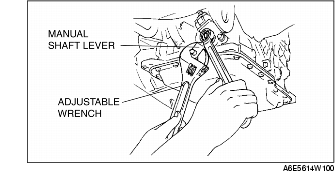
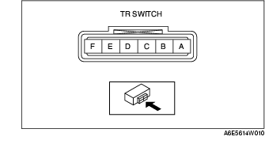
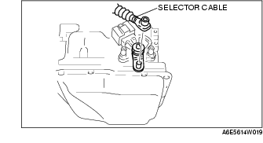

Transaxle range (TR) switch removal/installation [FN4A-EL]
- • Water or foreign objects entering the connector can cause a poor connection or corrosion. Be sure not to drop water or foreign objects on the connector when disconnecting it.
1. Disconnect the negative battery cable.
2. Disconnect the TR switch connector.
3. Remove the clip and disconnect the selector cable.

- • Do not use an impact wrench. Hold the manual shaft lever when removing the manual shaft nut, or the transaxle may be damaged.
4. Set the adjustable wrench as shown to hold the manual shaft lever.

5. Remove the manual shaft nut and washer.
6. Remove the manual shaft lever.

7. Remove the TR switch.
8. Rotate the manual shaft to the converter housing side fully, then return 2 notches to set the N position.

9. Turn the protrusion between terminals B and C until the resistance becomes 750 ohms.


10. Install the TR switch while aligning the protrusion and groove as shown.

11. Hand-tighten the TR switch mounting bolts.
12. Inspect the resistance between terminals B and C.

- • If there is any malfunction, readjust the TR switch. (See TRANSAXLE RANGE (TR) SWITCH ADJUSTMENT [FN4A-EL].)
13. Tighten the TR switch mounting bolts.
Tightening torque- • Do not use an impact wrench. Hold the manual shaft lever when removing the manual shaft nut, or the transaxle may be damaged.
14. Install the manual shaft lever and the washer.

15. Set the adjustable wrench as shown to hold the manual shaft lever, and tighten the manual shaft nut.

Tightening torque
16. Install the clip to the selector cable as shown in the figure.

17. Shift the selector lever to P position.
18. Turn the manual shaft lever to P position.
19. Connect the selector cable.

20. Inspect for continuity at the TR switch. (See TRANSAXLE RANGE (TR) SWITCH INSPECTION [FN4A-EL].)
- • If there is any malfunction, readjust the TR switch. (See TRANSAXLE RANGE (TR) SWITCH ADJUSTMENT [FN4A-EL].)
21. Connect the TR switch connector.
22. Connect the negative battery cable.
23. Inspect operation of the TR switch. (See TRANSAXLE RANGE (TR) SWITCH INSPECTION [FN4A-EL].)
- • If there is any malfunction, readjust the TR switch. (See TRANSAXLE RANGE (TR) SWITCH ADJUSTMENT [FN4A-EL].)